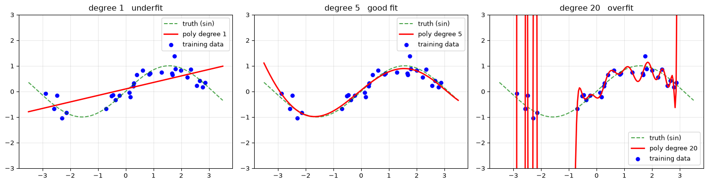
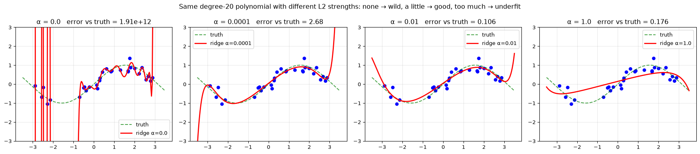
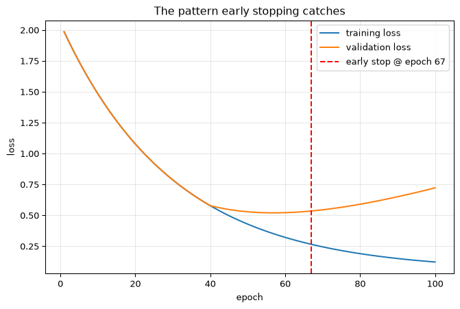

Regularisation & Training Dynamics
Stopping the network from memorising the training set. Overfitting, then the toolkit: L1/L2 weight decay, dropout, batch normalisation, early stopping, data augmentation.
01 The overfitting problem
Every model with enough capacity can memorise its training data. The point of ML is not to score well on data you've seen — it's to generalise to data you haven't.
The two curves that tell the story
Track training loss and validation loss over epochs. Three regimes:
- Both high, close together → underfitting. Not enough capacity or training time.
- Both low, close together → good fit. Model captures the signal.
- Training low, validation drifting up → overfitting. The model has started memorising quirks of the training set that don't generalise.
The moment validation loss starts climbing is the moment you should stop training (or add regularisation).
Why deep networks overfit so easily
Modern DL models are over-parameterised — they have far more parameters than training examples. In principle they can express any function that hits every training point exactly. Without a countervailing force they will.
The countervailing forces are:
- Regularisation — this note.
- Data augmentation — increases effective dataset size.
- Early stopping — halt before memorisation kicks in.
- Architectural inductive biases — CNNs assume spatial locality, transformers assume token attention. These bake in structural priors.
The paradoxical modern regime
Empirically, hugely over-parameterised networks (billions of parameters, far more than the data has degrees of freedom) still generalise well. Plotting test error against model size can even show double descent: the error rises as the model approaches just enough capacity to fit the training set exactly, then falls again as the model grows further. Part of the explanation is that SGD, weight decay and the architecture favour "flat" solutions that generalise over "sharp" ones that memorise. The theory is still catching up.
02 Bias-variance tradeoff
The decomposition
For any model, expected test error decomposes into:
- Bias — how wrong the model class itself is. A linear model has high bias on non-linear data.
- Variance — how much predictions swing depending on the training set. A very flexible model has high variance.
- Irreducible noise — inherent randomness in the data.
The classical tradeoff picture
Increasing model capacity moves along a curve:
- Simple model (linear regression) → high bias, low variance → underfit.
- Complex model (huge decision tree, big MLP) → low bias, high variance → overfit.
- Somewhere in the middle → best generalisation.
Regularisation reduces variance (at the cost of a small bias increase). That's why it's the standard cure for overfitting.
Seeing it in a picture
The first runnable cell at the end of this note fits polynomials of degree 1, 5 and 20 to the same 30 noisy points: degree 1 is the high-bias end (a straight line cannot bend to a sine), degree 20 the high-variance end (it chases the noise and swings wildly between points). Rerun it with a different np.random.seed and watch the degree-20 curve change shape completely while the degree-1 line barely moves: that is variance.
03 L1 / L2 weight decay
Add a penalty on large weights directly to the loss. Discourages the network from over-relying on any single weight.
L2 regularisation (weight decay)
Add to the loss:
\lambda > 0 is the regularisation strength.
The gradient of the penalty is \lambda \theta. So the update becomes:
That (1 - \eta \lambda) factor is where the name weight decay comes from — each step gently shrinks all weights toward zero.
L1 regularisation
Same idea, but penalise the absolute value:
L1 encourages sparsity — many weights hit exactly zero. Useful for feature selection but rare in modern deep learning.
Typical values
- L2: \lambda \in [10^{-5}, 10^{-3}].
weight_decay=1e-4is a common PyTorch default. - L1: \lambda \in [10^{-6}, 10^{-4}]. Rarely used alone; sometimes combined with L2 ("elastic net").
AdamW vs Adam
Adam + weight decay via the loss is not the same as "SGD + weight decay" — because Adam's adaptive learning rates scale the decay differently per parameter. AdamW (Loshchilov & Hutter, 2019) decouples the decay from the loss gradient (see note 06). It is the standard optimiser for transformers.
04 Dropout
Randomly zero out a fraction of activations during training. Forces the network not to rely on any single unit.
The idea
At each training step, for each hidden unit, flip a biased coin. With probability p (the drop probability), drop the unit — set its output to zero for this batch.
At test time, don't drop anything; scale activations by (1 - p) to keep the expected input to the next layer the same.
Modern frameworks use inverted dropout — scale by 1/(1-p) during training so no scaling is needed at test time.
Why it works
- Ensemble intuition. Each mini-batch trains a random sub-network. The final model is like averaging over an exponential number of thinned networks.
- Prevents co-adaptation. Neurons can't rely on specific other neurons being present — they have to develop robust features.
- Injects noise. Similar in spirit to data augmentation, but at the activation level.
Where to put dropout
- After fully-connected layers — most common.
Linear → ReLU → Dropout(0.5). - After conv layers — sometimes, at lower rates (0.1-0.25). CNNs already have implicit regularisation from weight sharing.
- Between attention and FFN layers in transformers — standard.
- Never on the output layer. You want deterministic predictions.
Typical drop rates
- FC layers in an image classifier: 0.5.
- CNN layers: 0.1 - 0.25.
- Transformers: 0.1.
Higher drop rate = stronger regularisation but slower training.
Interaction with batch norm
Dropout and batch norm can conflict — batch norm's running statistics get skewed by the randomness. Standard practice: BN before dropout, or use one but not both in the same block.
05 Batch normalisation
Normalise the activations at each layer so downstream layers see stable statistics. Not strictly regularisation, but has a regularising side effect and drastically improves trainability.
The operation
For each activation a in a layer, across the current mini-batch:
\gamma and \beta are learnable scale and shift parameters. They let the network undo the normalisation if it wants to — but usually the normalisation is helpful.
What it buys you
- Faster training. Each layer sees ~unit-variance inputs; gradients are well-scaled.
- Higher learning rates possible. Less risk of exploding/vanishing.
- Some regularisation. The mini-batch statistics inject noise similar to dropout.
- Fewer initialisation headaches. BN partially masks bad init.
Train vs eval mode
At training time, use the current batch's \mu, \sigma^2.
At eval/inference time, use running averages of \mu, \sigma^2 collected during training. Switching between modes (model.train() / model.eval() in PyTorch) is critical — forgetting is a classic bug.
Variants
- Layer norm — normalise across features per-example, not across the batch. Used in transformers (batch statistics are unstable for small batches).
- Group norm — a compromise; used when batch size is very small.
- Instance norm — normalise per-example per-channel. Used in style transfer.
Rule of thumb — CNNs → BN, transformers → LayerNorm, tiny batches → GroupNorm.
06 Early stopping
Watch the validation loss. When it stops improving, stop training.
The algorithm
best_val_loss = inf
patience_counter = 0
for epoch in epochs:
train_one_epoch()
val_loss = evaluate(validation_set)
if val_loss < best_val_loss:
best_val_loss = val_loss
save_model() # keep the best checkpoint
patience_counter = 0
else:
patience_counter += 1
if patience_counter >= patience:
break # stopTypical patience: 5-20 epochs.
Why it works
- Almost free. One setting (the patience) and no change to the model.
- Networks learn the broad patterns first. Early in training the weights pick up what most examples share; the quirks of individual examples are fitted later. Stopping in between keeps the first and skips the second.
The one thing to remember
Track validation loss, not training loss. Training loss always decreases; validation loss is what tells you generalisation is going the wrong way.
07 Data augmentation as regularisation
Train on random perturbations of your data. Effectively multiplies dataset size and forces invariance to task-irrelevant transformations.
The connection to regularisation
Instead of penalising complexity, data augmentation gives the network more data — every training epoch shows a slightly different version of each example. Effect: the model can't memorise individual images because it never sees the exact same one twice.
Vision augmentations
- Random crop and resize.
- Horizontal flip.
- Colour jitter (brightness, contrast, saturation).
- Random erasing / cutout.
- Mixup / CutMix (blend two images and labels).
Text augmentations
- Random synonym substitution.
- Back-translation (translate to French and back).
- Random deletion / swapping.
Less common than for vision — small perturbations to text can change meaning drastically.
Audio augmentations
- Time shift, pitch shift.
- Add background noise.
- SpecAugment — mask random time or frequency bands in the spectrogram.
The rule
A transformation is safe augmentation iff it doesn't change the label. Cropping a cat still shows a cat. Rotating a "6" upside-down turns it into a "9". Match the augmentation to the task.
08 Guide for choosing
What to try first, in order
- Data augmentation. Almost always helps when label-preserving transformations exist (images, audio). Costs only compute.
- Early stopping. Costs nothing. Always in production pipelines.
- L2 weight decay (usually \lambda = 10^{-4}). Cheap default.
- Batch norm — for CNNs. LayerNorm for transformers. Usually already in the architecture.
- Dropout. Add in fully-connected heads. Rate 0.5 is a common start.
- Reduce model size or add more data if none of the above works.
Diagnosing overfitting
| Symptom | Fix to try |
|---|---|
| Training loss ↓, validation loss ↑ | Any regulariser; more data |
| Both losses high and equal | Not enough capacity; train longer; tune LR |
| Training loss oscillates | Lower LR; add BN |
| Great validation score, poor results on new real-world data | Data leakage or distribution shift — not overfitting |
The one true takeaway
Overfitting is a diagnostic problem — you notice it, you diagnose it, you pick a treatment. There is no single "correct amount" of regularisation. Tune based on the validation curve.
09 Runnable demo
import numpy as np
import matplotlib.pyplot as plt
# Synthetic 1D regression — noisy sine curve
np.random.seed(0)
n_train = 30
x_train = np.sort(np.random.uniform(-3, 3, n_train))
y_train = np.sin(x_train) + 0.2 * np.random.randn(n_train)
x_grid = np.linspace(-3.5, 3.5, 200)
y_true = np.sin(x_grid)
# Fit polynomials of increasing degree — the "capacity knob"
from numpy.polynomial import polynomial as P
fig, axes = plt.subplots(1, 3, figsize=(15, 4))
for ax, deg in zip(axes, [1, 5, 20]):
coeffs = np.polyfit(x_train, y_train, deg)
y_fit = np.polyval(coeffs, x_grid)
ax.plot(x_grid, y_true, 'g--', label='truth (sin)', alpha=0.7)
ax.plot(x_grid, y_fit, 'r-', label=f'poly degree {deg}', lw=2)
ax.scatter(x_train, y_train, c='blue', s=30, label='training data')
ax.set_ylim(-3, 3)
ax.set_title(f'degree {deg} ' +
('underfit' if deg == 1 else 'good fit' if deg == 5 else 'overfit'))
ax.legend(); ax.grid(alpha=0.3)
plt.tight_layout(); plt.show()
L2 regularisation tames the wild polynomial
from sklearn.linear_model import Ridge
from sklearn.preprocessing import PolynomialFeatures
# Scale x into [-1, 1] first: otherwise x²⁰ is in the millions, its coefficient is tiny,
# and the L2 penalty (which looks at coefficient sizes) barely touches it.
poly = PolynomialFeatures(degree=20, include_bias=False)
X_train = poly.fit_transform((x_train / 3.5).reshape(-1, 1))
X_grid = poly.transform((x_grid / 3.5).reshape(-1, 1))
fig, axes = plt.subplots(1, 4, figsize=(18, 4))
for ax, alpha in zip(axes, [0.0, 1e-4, 1e-2, 1.0]):
ridge = Ridge(alpha=alpha, solver="svd").fit(X_train, y_train) # svd: stable even for alpha = 0
y_fit = ridge.predict(X_grid)
err = np.mean((y_fit - y_true) ** 2) # distance from the true sine
ax.plot(x_grid, y_true, 'g--', label='truth', alpha=0.7)
ax.plot(x_grid, y_fit, 'r-', label=f'ridge α={alpha}', lw=2)
ax.scatter(x_train, y_train, c='blue', s=30)
ax.set_ylim(-3, 3)
ax.set_title(f'α = {alpha} error vs truth = {err:.3g}')
ax.legend(); ax.grid(alpha=0.3)
plt.suptitle('Same degree-20 polynomial with different L2 strengths: none → wild, a little → good, too much → underfit')
plt.tight_layout(); plt.show()
Dropout demonstration — hand-coded
def dropout_forward(a, p=0.5, train=True):
if not train:
return a
mask = (np.random.rand(*a.shape) > p).astype(a.dtype)
return a * mask / (1 - p) # inverted dropout — no scaling at eval
a = np.ones((3, 8))
np.random.seed(42)
print("input:")
print(a)
print("\nwith dropout(p=0.5, train=True):")
print(dropout_forward(a, 0.5, train=True))
print("\nwith dropout(p=0.5, train=False) — eval mode:")
print(dropout_forward(a, 0.5, train=False))input: [[1. 1. 1. 1. 1. 1. 1. 1.] [1. 1. 1. 1. 1. 1. 1. 1.] [1. 1. 1. 1. 1. 1. 1. 1.]] with dropout(p=0.5, train=True): [[0. 2. 2. 2. 0. 0. 0. 2.] [2. 2. 0. 2. 2. 0. 0. 0.] [0. 2. 0. 0. 2. 0. 0. 0.]] with dropout(p=0.5, train=False) — eval mode: [[1. 1. 1. 1. 1. 1. 1. 1.] [1. 1. 1. 1. 1. 1. 1. 1.] [1. 1. 1. 1. 1. 1. 1. 1.]]
Batch norm demonstration
def batch_norm(x, gamma=1.0, beta=0.0, eps=1e-5):
mu = x.mean(axis=0)
var = x.var(axis=0)
x_hat = (x - mu) / np.sqrt(var + eps)
return gamma * x_hat + beta
np.random.seed(0)
# Simulate messy pre-activations across a batch
x = np.random.randn(64, 4) * np.array([5.0, 0.1, 3.0, 2.0]) + np.array([10, -3, 0, 5])
print("BEFORE batch norm — per-feature mean and std:")
print(f" mean = {x.mean(axis=0).round(3)}")
print(f" std = {x.std(axis=0).round(3)}")
x_bn = batch_norm(x)
print("\nAFTER batch norm:")
print(f" mean = {x_bn.mean(axis=0).round(6)}")
print(f" std = {x_bn.std(axis=0).round(6)}")BEFORE batch norm — per-feature mean and std: mean = [10.185 -3.009 -0.086 5.439] std = [5.463 0.104 2.663 1.763] AFTER batch norm: mean = [-0. -0. 0. -0.] std = [1. 0.999542 0.999999 0.999998]
Early stopping — the training curve you're watching
# Toy simulation of typical train/val curves
epochs = np.arange(1, 101)
train_loss = 2.0 * np.exp(-epochs / 30) + 0.05
val_loss = 2.0 * np.exp(-epochs / 30) + 0.05 + 0.01 * np.maximum(0, epochs - 40)
# Early-stopping logic
best_val = np.inf; patience = 10; ctr = 0; stop_epoch = None
for e in range(len(epochs)):
if val_loss[e] < best_val:
best_val = val_loss[e]; ctr = 0
else:
ctr += 1
if ctr >= patience:
stop_epoch = epochs[e]; break
plt.figure(figsize=(8, 5))
plt.plot(epochs, train_loss, label='training loss')
plt.plot(epochs, val_loss, label='validation loss')
if stop_epoch:
plt.axvline(stop_epoch, color='red', ls='--', label=f'early stop @ epoch {stop_epoch}')
plt.xlabel('epoch'); plt.ylabel('loss')
plt.title('The pattern early stopping catches')
plt.legend(); plt.grid(alpha=0.3)
plt.show()